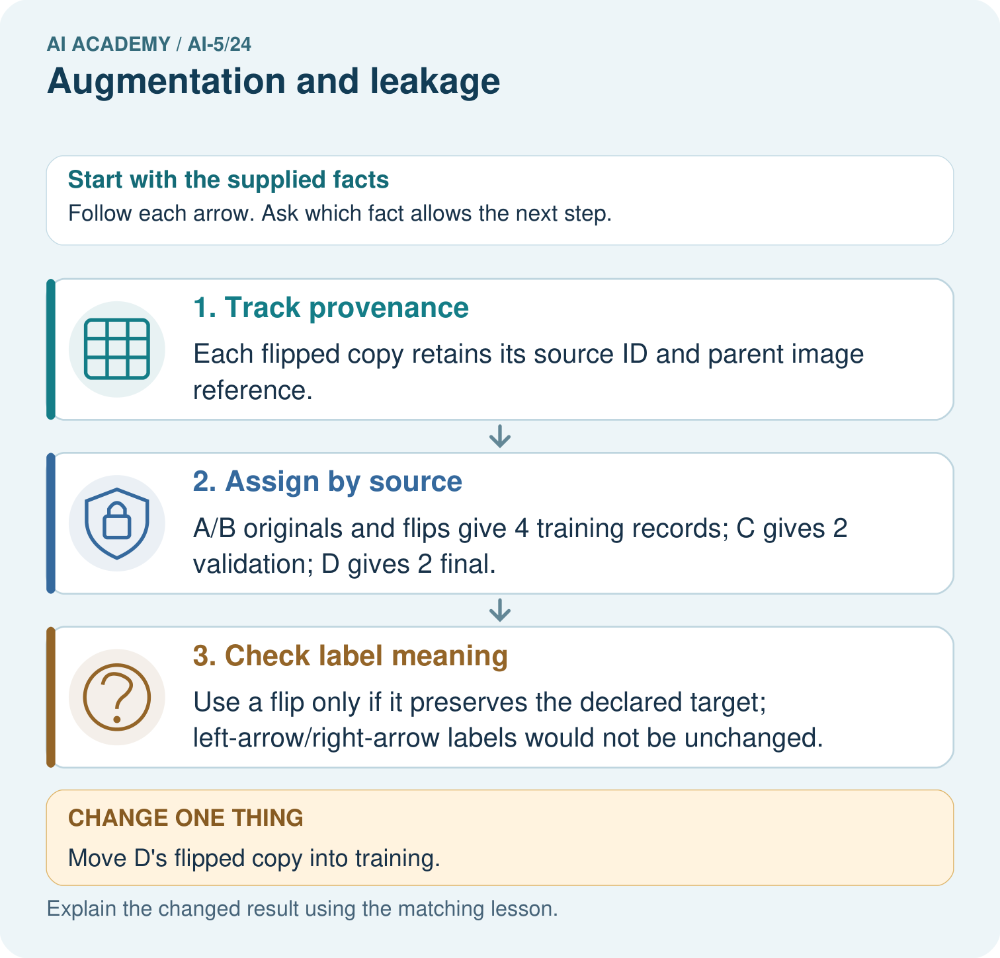
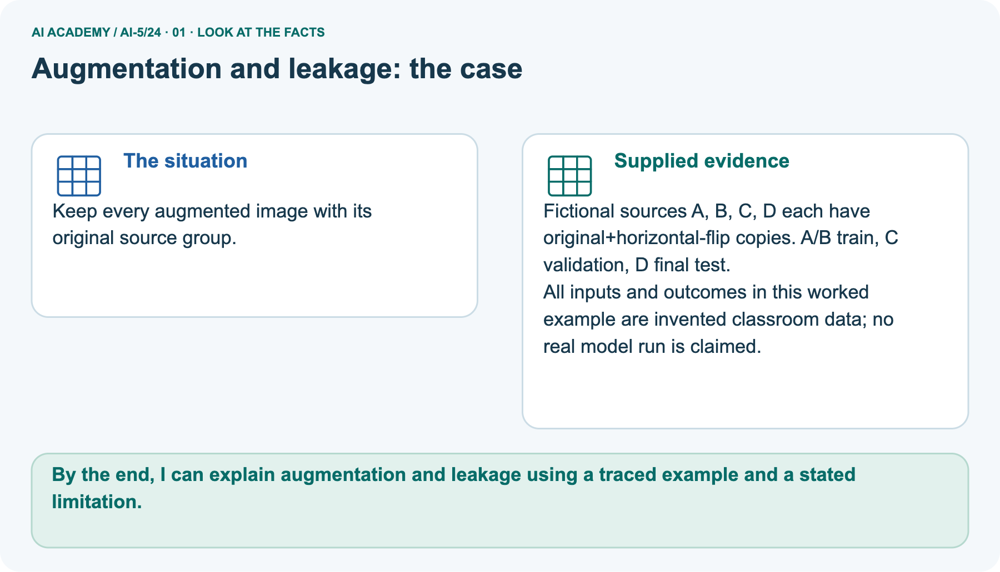
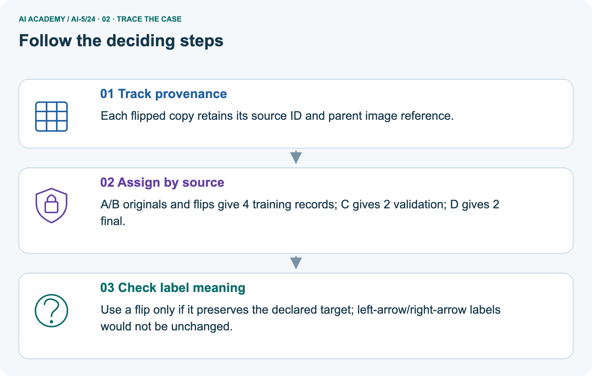
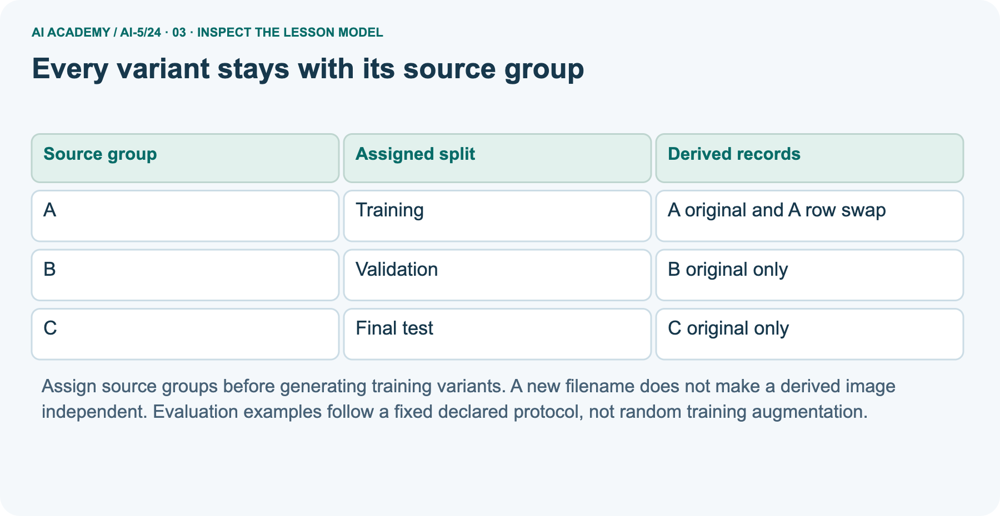
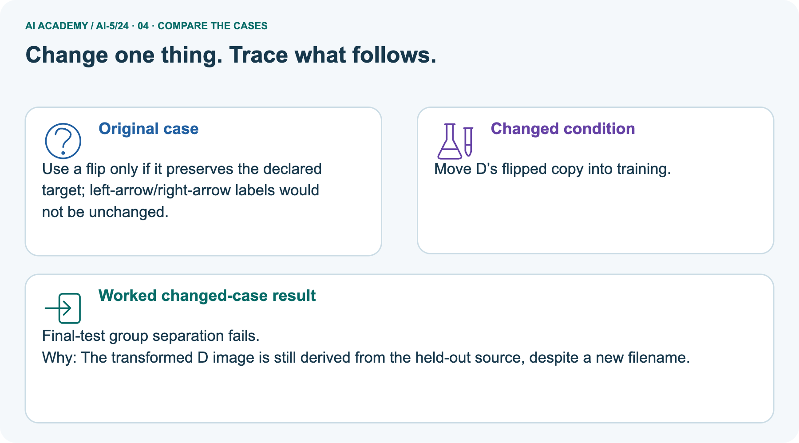
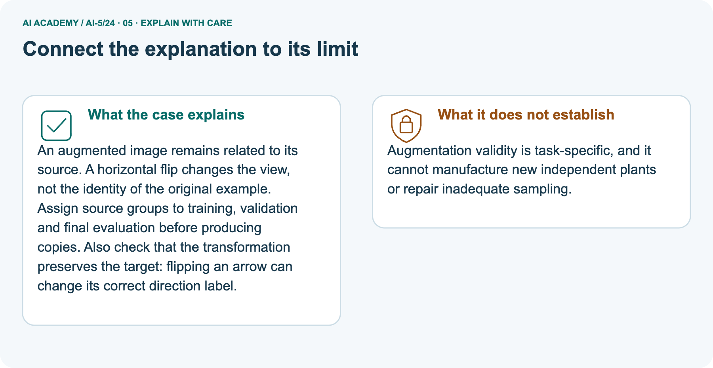

AI Academy · Level 5 · Grade 10 · Week 24 · Workbook
Augmentation and leakage
Learn to understand, design, build, test and explain AI systems responsibly.
Project: Image-pattern Network Investigation
Workbook · 1 of 15
Recall and choose your starting point
Record your starting explanation for Augmentation and leakage before opening notes. Show any later correction separately.
Try the recall before opening notes. Then use a different colour or a labelled second line to correct your explanation.
Training a small image model
Without opening the old lesson, explain one key idea from Training a small image model. Give an example and a mistake that the idea helps you avoid.
Convolution as a local operation
Without opening the old lesson, explain one key idea from Convolution as a local operation. Give an example and a mistake that the idea helps you avoid.
Debugging shapes and gradients
Without opening the old lesson, explain one key idea from Debugging shapes and gradients. Give an example and a mistake that the idea helps you avoid.
Lesson reference for workbook practice
Use this reference for the original W1–W3 and W5 exercises. The separately named independent case supplies its own changed facts; use those facts for that attempt before feedback.
Return to the binary image task: class 1 means the left column sum is strictly larger than the right column sum; equal sums belong to class 0. Let d be left sum minus right sum.
An augmentation is useful only under a stated task and transformation rule. More image files do not automatically mean more independent evidence.
| Operation on rows [1, 0] and [0, 0] | Result rows | d | Class |
|---|---|---|---|
| Original | [1, 0] and [0, 0] | 1 | 1 |
| Swap top and bottom rows | [0, 0] and [1, 0] | 1 | 1 |
| Swap left and right columns | [0, 1] and [0, 0] | -1 | 0 |
Swapping rows preserves each column sum, so it preserves this task label for every valid image. Swapping columns changes d to -d. For nonzero d the class changes; for d = 0 it stays class 0.
Blindly copying the original label after every flip would create incorrect training targets.
A transformation may be valid for one task and invalid for another. A crop can remove the evidence needed for a label.
Choose allowed transformations using the task definition and training evidence, document the assumptions, and evaluate the choice on validation data.
Workbook · 2 of 15
Practise with fading help
Complete the supported Augmentation and leakage trace and record the first step you can explain without help.
Use W2: Keep the equality boundary for Augmentation and leakage. Record the answer once; the lesson and workbook refer to the same attempt.
| Given inputs | Procedure I chose | Middle steps | Result and check |
|---|---|---|---|
Workbook · 3 of 15
Individual reasoning check
Check the proposed Augmentation and leakage explanation against the supplied facts before discussing it.
Use the worked case for Augmentation and leakage. Proposed explanation: “Every image flip preserves the label”. Decide whether this explanation is supported.
Point to the step or supplied fact that decides; explain your repair if needed.
Workbook · 4 of 15
Independent transfer case
Write one first attempt at the reserved independent case before feedback. Repeated copies of that case refer to the same recorded attempt.
Independent case: Design a grouped split independently
Six fictional source groups J, K, L, M, N and O each have one original and three derived records. Assign J, K and L to training, M to validation and N, O to final test.
Keep all four records per training group but only originals for evaluation. Give source and retained-record counts per split, total retained records and excluded derived records.
Attempt this case before feedback. Record any help. Earlier examples below are further practice; a case already practised with feedback cannot establish fresh transfer.
Workbook · 5 of 15
W1 Check the label after a transformation
Check the label after a transformation. Apply the supplied Augmentation and leakage facts and keep your reasoning.
For rows [0, 1], [0, 1], compute d and class before and after swapping rows and after swapping columns.
Workbook · 6 of 15
W2 Keep the equality boundary
Keep the equality boundary. Apply the supplied Augmentation and leakage facts and keep your reasoning.
For rows [1, 0], [0, 1], compute d and class before and after a column swap. Why is always replacing a label by 1 minus the label incorrect?
Workbook · 7 of 15
W3 Audit related records
Audit related records. Apply the supplied Augmentation and leakage facts and keep your reasoning.
Training contains P original and Q original. Validation contains P crop and R original. Final test contains S original. P crop is derived from P original.
Identify the overlap and explain what must be rerun if this validation set already selected a model.
Workbook · 8 of 15
W4 Design a grouped split independently
Attempt before feedback. If this repeats the selected independent case, reuse that first attempt; otherwise keep a separate record. Design a grouped split independently. Apply the supplied Augmentation and leakage facts and keep your reasoning.
Six fictional source groups J, K, L, M, N and O each have one original and three derived records. Assign J, K and L to training, M to validation and N, O to final test.
Keep all four records per training group but only originals for evaluation. Give source and retained-record counts per split, total retained records and excluded derived records.
Workbook · 9 of 15
W5 Match a training budget
Match a training budget. Apply the supplied Augmentation and leakage facts and keep your reasoning.
Eight source images each have an original plus two variants. Compare four epochs of these 24 records with four epochs of the eight originals, using one-example batches.
Give both update counts and one way to match budgets without using final outcomes.
Workbook · 10 of 15
Project checkpoint and reflection
Connect Augmentation and leakage to Image-pattern Network Investigation, identify a limit and choose the next useful test.
Add a labelled augmentation and leakage evidence sheet to Image-pattern Network Investigation. Show how you can check whether a transformation preserves the task label.
Use the supplied fictional case and keep its inputs, intermediate steps, calculation or prediction, and limitation. Connect this record to last week’s record; a matching answer without a trace is insufficient.
Workbook · 11 of 15
Feedback, return check and learning record
Record the first repaired step and a different case to revisit after a delay.
| Evidence | My record |
|---|---|
| Worked alone / hint / model | |
| First step I repaired and why | |
| New case checked later; date and result | |
| What I can now explain without notes | |
| One remaining question |
Revisit this idea with your teacher after a delay. Familiarity is different from explaining and using it on a changed case.
Workbook · 12 of 15
Pictorial case practice: Augmentation and leakage
Keep every augmented image with its original source group. Explain the labelled step before checking the changed condition.
Keep every augmented image with its original source group.
Fictional sources A, B, C, D each have original+horizontal-flip copies. A/B train, C validation, D final test.
All inputs and outcomes in this worked example are invented classroom data; no real model run is claimed.

How many independent source groups are in the final test? Point to the relevant step in the picture, then write the changed result and the rule or evidence that supports it.
Record the help used
Support used: alone / hint / worked example. This record is practice evidence.
Project connection: For your Image-pattern Network Investigation, save the input, procedure, observed result and limitation of this check.
Label this worked example as practice; use a different, previously unreviewed case when checking independent understanding.
Workbook · 13 of 15
Project portfolio milestone
Keep this week’s input, deciding step, result and limit together in the Image-pattern Network Investigation record.
Project: Image-pattern Network Investigation
Current milestone: Evaluate and revise. Compare with your starting method, explain errors and record a justified revision.
For your Image-pattern Network Investigation, save the input, procedure, observed result and limitation of this check.
Label this worked example as practice; use a different, previously unreviewed case when checking independent understanding.
| Evidence to keep | My record |
|---|---|
| This week’s input and deciding step | |
| Prediction and actual result (or labelled paper trace) | |
| One change since the previous checkpoint and why | |
| One error or limit and the next test |
Workbook · 14 of 15
Supported practice and learning evidence
Try the supported questions before comparing with hints and feedback. Record what you repaired and the evidence you retained.
Use this supported practice once, in the browser or on paper. Keep the reserved independent assessment for a separate first attempt before teacher feedback.
Keep every augmented image with its original source group.
Practice 1: explain the deciding evidence
Which labelled step matches this detail? Use a flip only if it preserves the declared target; left-arrow/right-arrow labels would not be unchanged.
1. Assign by source
2. Track provenance
3. Check label meaning
Hint · try first
Hint if needed: Read the steps in the pictorial case. Match the supplied detail to the stage that performs or records it.
Feedback · compare after trying
After your attempt, compare with the supported explanation: Check label meaning Use a flip only if it preserves the declared target; left-arrow/right-arrow labels would not be unchanged.
An augmented image remains related to its source. A horizontal flip changes the view, not the identity of the original example. Assign source groups to training, validation and final evaluation before producing copies.
Also check that the transformation preserves the target: flipping an arrow can change its correct direction label.
Practice 2: explain the deciding evidence
Changed case · predict first
Changed-case practice: Move D’s flipped copy into training. Which conclusion is supported by the supplied facts?
1. Final-test group separation fails.
2. We can decide the result without examining the changed input or the procedure.
3. This one example guarantees correct results for every future input.
Hint · try first
Hint if needed: Use the changed condition and the deciding step in the pictorial trace. The answer must say what follows from those facts.
Feedback · compare after trying
After your attempt, compare with the supported explanation: Final-test group separation fails. The transformed D image is still derived from the held-out source, despite a new filename.
Repair a missing building block
Review Training a small image model (ai-5/23). Goal: Trace a complete image model with fixed features and one trained weight. Short practice: Does lower training loss alone establish that four updates generalise better?
Point to the relevant step in the picture, then write the changed result and the rule or evidence that supports it.. Return to this week and explain what you changed.
Review Convolution as a local operation (ai-5/21). Goal: Compute a local weighted sum at each valid image position. Short practice: Why is flipping the kernel an implementation change here?
Point to the relevant step in the picture, then write the changed result and the rule or evidence that supports it.. Return to this week and explain what you changed.
Review Debugging shapes and gradients (ai-5/18). Goal: Check dimension contracts before computing a layer. Short practice: What should a debugging record pair with every gradient value?
Point to the relevant step in the picture, then write the changed result and the rule or evidence that supports it.. Return to this week and explain what you changed.
Predict, run and debug
The browser lab lets you edit the supported Python examples already included in this lesson. Predict first, run, inspect the actual output or error, change one input, then run again.
Keep code, predictions, actual results and a reasoned revision together. On paper, label your result as a trace rather than an execution.
Keep your completed work
Use Download completed work in the hosted lesson to export your answers, reflections, practice feedback and code-run evidence. Open the HTML copy to read or print it.
Drafts stay in this browser when storage is available; clear drafts on a shared device.
Workbook · 15 of 15
Visual concept journey
Explain each Augmentation and leakage picture from its labels, then record a relevant limit.
01. Augmentation and leakage: the case

Keep every augmented image with its original source group. Supplied facts: Fictional sources A, B, C, D each have original+horizontal-flip copies. A/B train, C validation, D final test.
All inputs and outcomes in this worked example are invented classroom data; no real model run is claimed.
Point to the given fact that matters most. Explain why it matters.
02. Follow the deciding steps

Track provenance: Each flipped copy retains its source ID and parent image reference. → Assign by source: A/B originals and flips give 4 training records; C gives 2 validation; D gives 2 final. → Check label meaning: Use a flip only if it preserves the declared target; left-arrow/right-arrow labels would not be unchanged.
Point to each numbered stage and explain which recorded input it uses.
03. Every variant stays with its source group

Every variant stays with its source group. A | Training | A original and A row swap. B | Validation | B original only. C | Final test | C original only
Read the labels and values. Explain the relationship the model shows.
04. Change one thing. Trace what follows.

Original case: Use a flip only if it preserves the declared target; left-arrow/right-arrow labels would not be unchanged. Changed condition: Move D’s flipped copy into training.
Expected result: Final-test group separation fails. Reason: The transformed D image is still derived from the held-out source, despite a new filename.
Predict before checking the worked changed-case result. Name what changed and what the supplied facts allow you to conclude.
05. Connect the explanation to its limit

An augmented image remains related to its source. A horizontal flip changes the view, not the identity of the original example. Assign source groups to training, validation and final evaluation before producing copies.
Also check that the transformation preserves the target: flipping an arrow can change its correct direction label.
Limit: Augmentation validity is task-specific, and it cannot manufacture new independent plants or repair inadequate sampling.
Explain the case, then point to a limit on the claim.
06. Make the idea visible in your project

For your Image-pattern Network Investigation, save the input, procedure, observed result and limitation of this check.
Label this worked example as practice; use a different, previously unreviewed case when checking independent understanding. Draw your input, deciding step, result and limit.
Supported question: How many independent source groups are in the final test? Point to the relevant step in the picture, then write the changed result and the rule or evidence that supports it.
Draw your project trace and justify the deciding step using evidence.